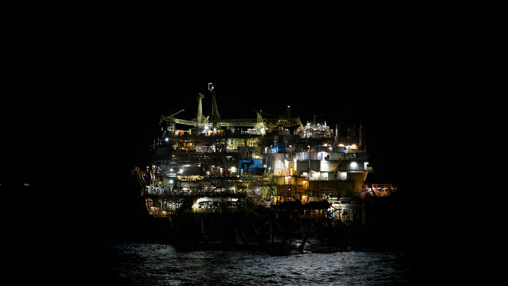
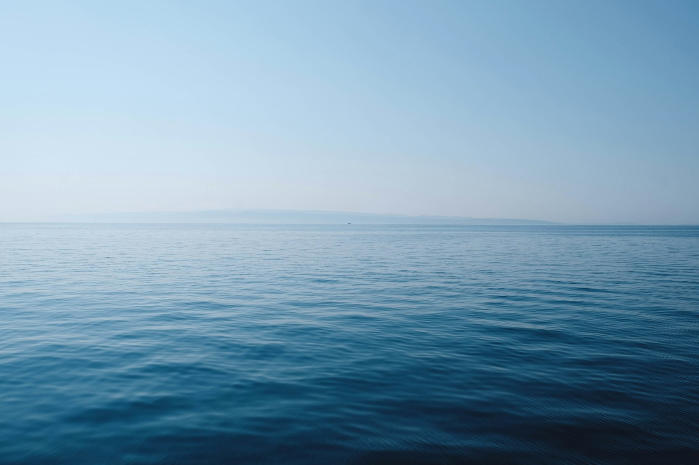

Capability
Offshore surveillance and security
A proposed operation for continuous watch over offshore oil assets, subject to the approvals those activities require.
Proposed operation
How the security operation is described
The proposed security operation combines maritime patrols, modern surveillance technology, intelligence gathering, rapid incident reporting, vessel monitoring and coordinated response mechanisms.
Proposed operational coverage is 24/7 surveillance and security support across the stated area of approximately 428 kilometres.

Operational experience
What the company states about prior surveillance
The company states that its operational team has undertaken surveillance efforts in the high seas within the offshore area of Akwa Ibom State without a formal government or principal engagement.
The company states that these surveillance activities contributed to the prevention, detection and discouragement of illegal activities around vulnerable offshore oil assets.
Operational requirements
What the proposed operation depends on
These activities are subject to the operational requirements and approvals of relevant government agencies and security authorities.
Patrol assets
Communications systems
Vessel tracking
Aerial and maritime surveillance technologies
Command-and-control infrastructure
Modern security equipment
Coverage
Proposed continuous 24/7 surveillance supportRound-the-clock surveillance and security support is proposed. It is not described as a current government mandate.